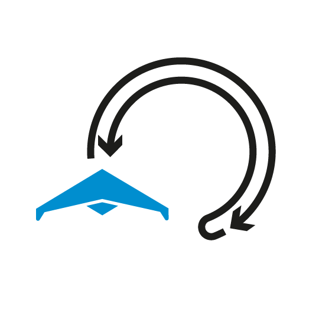

مرکز تحقیقات

سنسور ها و سکوها
سنسور ها
مهم ترين نقطه آغاز عبارت است از انتخاب سنسور مناسب. ما طيف گسترده اي از سنسورها و ابزارهاي تجزيه و تحليل را ارائه مي کنيم.
بیشتر بدانید

سکو ها
انتخاب سکوي مناسب براي هر کاربرد مي تواند به برآوردن نيازها کمک کند. مانند پهپاد، زهپاد (وسيله زميني هدايت پذير از دور)، سکوي روآبي بدون سرنشين، زيردريايي بدون سرنشين.
بیشتر بدانید